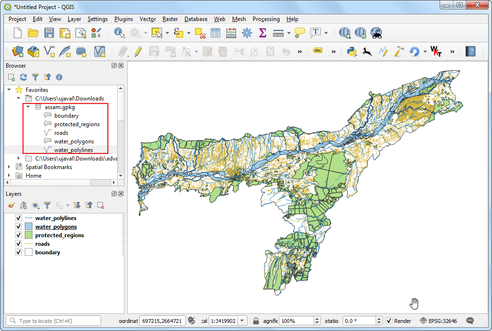
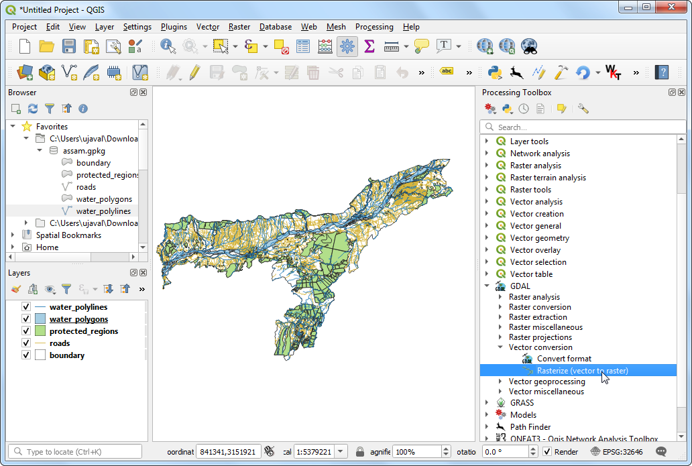
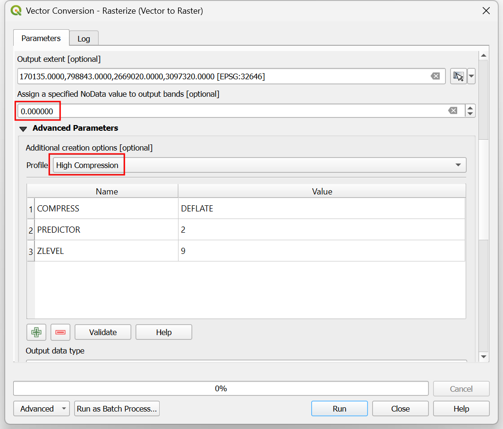
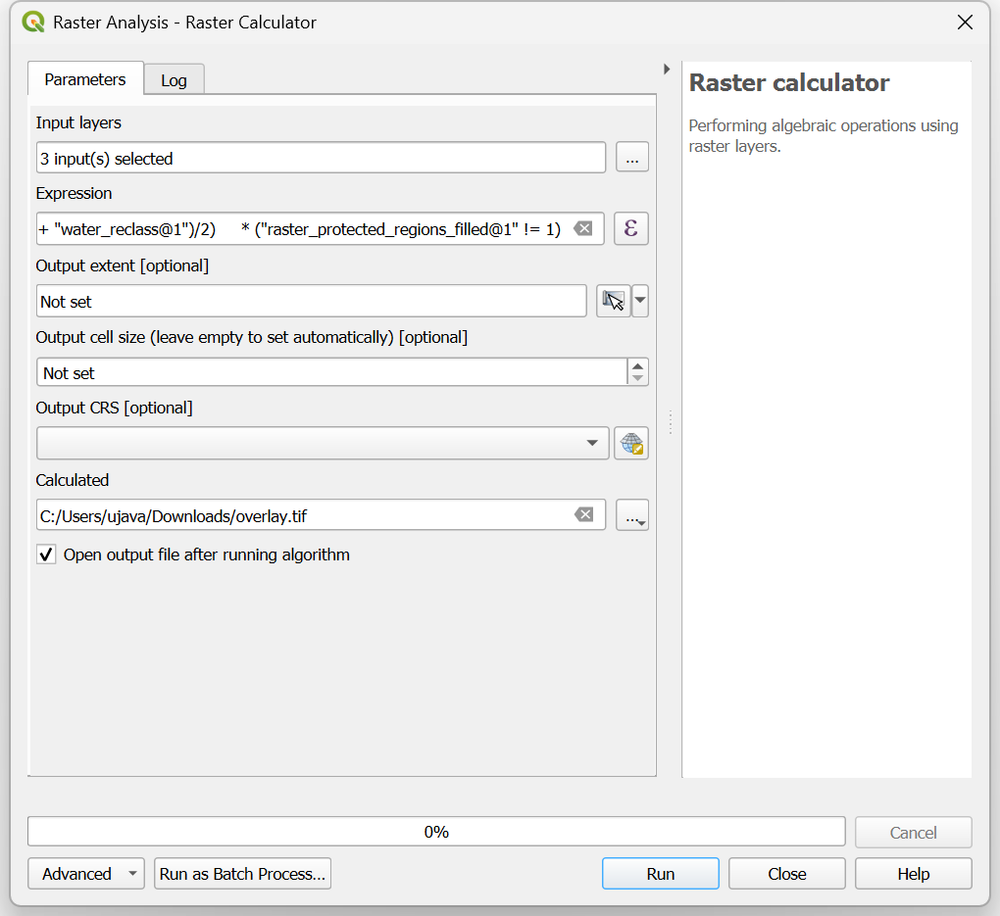
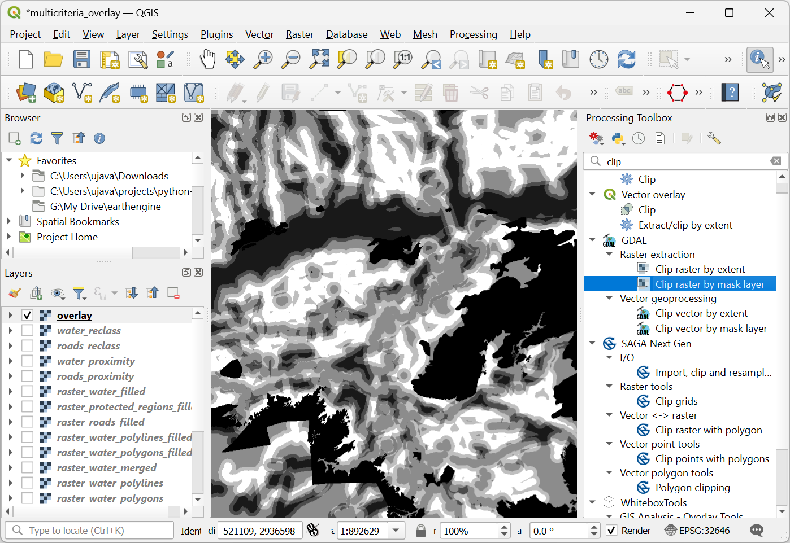
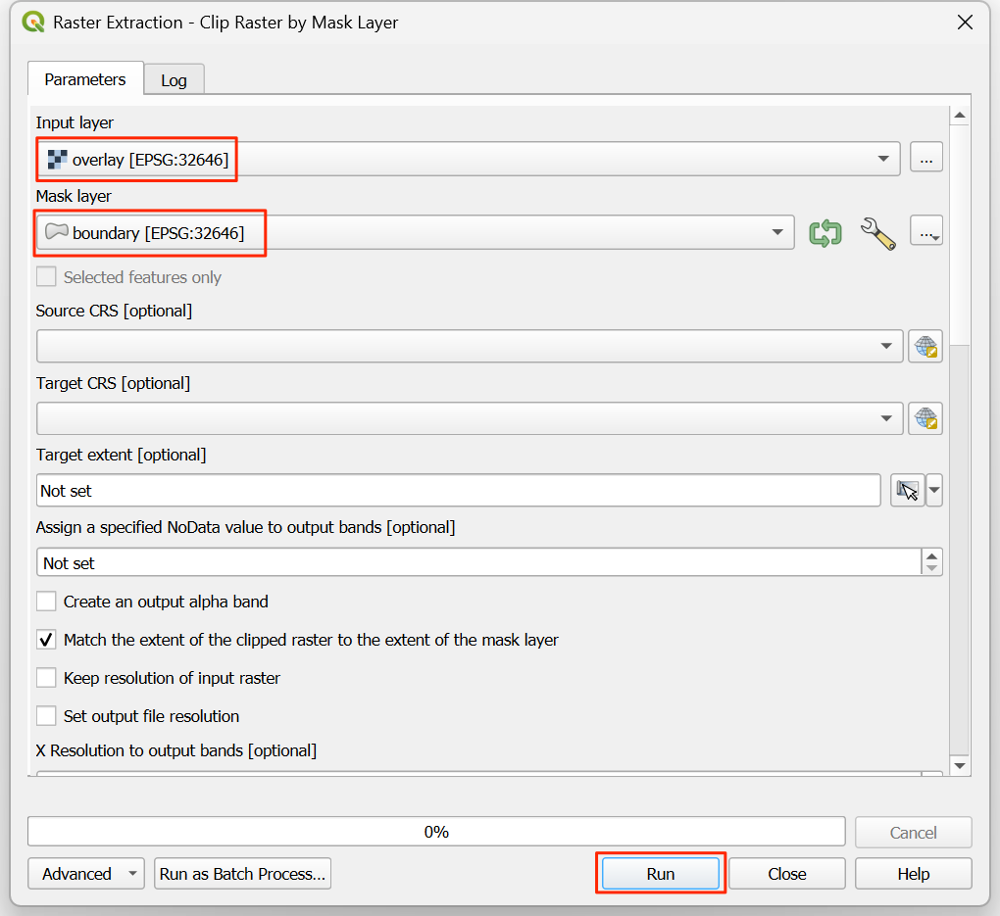

Ujaval Gandhi
Ujaval GandhiMulti Criteria Overlay Analyse (QGIS3)¶
Multi-criteria gewogen overlay-analyse is het proces van het toewijzen van gebieden op basis van een variëteit aan eigenschappen die de geselecteerde gebieden zouden moeten hebben. Hoewel dit een veel voorkomende bewerking in GIS is, wordt die het beste uitgevoerd in de rasterruimte met een op een raster gebaseerde benadering.
Notitie
Vector- vs Raster-overlays
U kunt de overlay-analyse uitvoeren op vectorlagen met gereedschappen voor geoverwerking, zoals buffer, dissolve, difference en intersection. Deze methode is ideaal als u een binair antwoord geschikt/niet-geschikt zoekt en u werkt met een handjevol lagen. U kunt onze videohandleiding bekijken op Locating A New Bicycle Parking Station using Multicriteria Overlay Analysis voor een stap-voor-stap gids voor deze benadering.
Werken in de rasterruimte geeft u een rangschikking van de geschiktheid - niet alleen de meest geschikte plek. Het stelt u ook in staat elke aantal invoerlagen gemakkelijk te combineren en verschillende wegingen toe te wijzen aan elk criterium. Over het algemeen is dit de voorkeursbenadering voor geschiktheid.
Deze handleiding gaat door de typische werkstroom voor het uitvoeren van een geschikte plaats-analyse - converteren van bron vectorgegevens naar toepasselijke rasters, ze opnieuw te classificeren en rekenkundige bewerkingen uitvoeren.
Overzicht van de taak¶
In deze handleiding zullen we de geschikte gebieden voor ontwikkeling identificeren, dat zijn
Dichtbij wegen en
Niet in de buurt van watergebieden en
Niet in een beschermde regio.

De gegevens ophalen¶
We zullen vector gegevenslagen gebruiken van OpenStreetMap (OSM). OSM is een globale database van vrij beschikbare basis kaartgegevens. Geofabrik verschaft dagelijks bijgewerkte Shapefiles voor gegevenssets van OpenStreetMap.
We zullen de gegevenslagen van OSM gebruiken voor de staat Assam in India. Geofabrik India shapefiles werden gedownload, opnieuw geprojecteerd naar een projectie UTM, geclipt tot de staatsgrenzen en verpakt in één enkel bestand voor GeoPackage. U kunt een kopie van het GeoPackage downloaden vanaf de link hieronder:
Gegevensbron: [GEOFABRIK]
Procedure¶
Blader naar het gedownloade bestand
assam.gpkgin QGIS Browser. Vergroot het en sleep elk van de 5 individuele gegevenslagen naar het kaartvenster. U zult de lagenboundary,roads,protected_regions,water_polygonsenwater_polylineszien geladen in het paneel Lagen.

De eerste stap in de overlay-analyse, is om elke gegevenslaag te converteren naar een raster. Een belangrijke overweging is dat alle rasters hetzelfde bereik moeten hebben. We zullen de laag
boundarygebruiken als het bereik voor alle rasters. Ga naar . Zoek naar en lokaliseer het algoritme . Dubbelklik er op om het te starten.

In het dialoogvenster Vector conversie - Rasteriseren (vector naar raster), selecteer
roadsals de Invoerlaag. We willen een uitvoerraster maken met een pixelwaarde van 1 waar een weg is en 0 waar geen wegen zijn. Voer1in als de Een vaste waarde om te branden. De invoerlagen zijn in een geprojecteerd CRS met meters als de eenheid. SelecteerEenheden voor geoverwijzingenals de Eenheden grootte uitvoerraster. We zullen de resolutie van het uitvoerraster instellen op 15 meters. Selecteer15voor zowel Breedte/Horizontale resolutie als Hoogte/Verticale resolutie. Klik vervolgens op de pijl naast Bereik uitvoer en selecteer voor .

Scroll naar beneden naar de Geavanceerde parameters en selecteer het profiel
Hoge compressieom de compressie toe te passen. Dit zal het gecomprimeerde rasterbestand kleiner maken na het uitvoeren van het gereedschap. Toepassen van compressie zonder verlies wordt enorm aanbevolen bij het werken met rastergegevens.

Stel het uitvoerraster Gerasteriseerd in als
raster_roads.tifen klik op Uitvoeren.

Als de verwerking is voltooid zult u een nieuwe laag raster_roads zien geladen in het paneel Lagen. Het raster heeft pixelwaarden 1 voor pixels die kruisen met de wegen. Alle andere pixels zijn ingesteld als waarden Geen gegevens. Deze waarden Geen gegevens zijn problematisch. Als rasterberekeningen (die we later zullen gebruiken) een pixel met een waarde Geen gegevens tegenkomt in enige laag, stelt het ook de waarde voor de uitvoer van die pixel in als Geen gegevens, wat dus onverwachte uitvoer geeft. We zullen deze waarden vullen met de waarde 0. Zoek naar en lokaliseer het algoritme . Dubbelklik erop om het te starten.

Selecteer
raster_roadsals de Raster input en kies0als de Vulwaarde. Scroll naar beneden naar de Geavanceerde parameters en selecteer het profielHoge compressieom de compressie toe te passen. Stel het uitvoerbestand in oproads_proximity.tifen klik op Uitvoeren.

Als de verwerking eenmaal is voltooid, zult u de nieuwe laag
raster_roads_filledzien geladen in het paneel Lagen. Dit raster heeft de waarden 1 voor wegen en 0 voor niet-wegen. Als de laag niet correct wordt gevisualiseerd, kunt u klikken op de knop Paneel Laag opmaken openen en de Min instellen op0en Max op1.

Herhaal de stappen 3-8 voor de andere 3 vectorlagen
protected_regions,water_polylinesenwater_polygons. U moet deze lagen rasteriseren en de cellen met Geen gegevens vullen. Als u deze stappen handmatig wilt uitvoeren, kunt u het dialoogvenster voor het uitvoieren van het algortime configureren, het algoritme ujitvoeren en als het algoritme eenmaal is voltooid, schakelen naar de tab Parameters en eenvoudigweg de namen voor invoer- en uitvoerlagen wijzigen. U kunt ook elk algoritme over alle 4 lagen in een stap uitvoeren met Batch Processing. Bekijk de handleiding Massa verwerken met behulp van Framework Processing (QGIS 3) om daar meer over te weten te komen. Als u eenmaal klaar bent, zou u 4 rasterlagen moeten hebben en de volgende corresponderende rasterlagen moeten makenraster_roads_filled,raster_protected_regions_filled,raster_water_polylines_filledenraster_water_polygons_filled. Het zal u opvallen dat we 2 aan water gerelateerde lagen hebben - beide geven water weer. We kunnen ze samenvoegen tot een enkele laag die de watergebieden in de regio weergeeft. Zoek naar en lokaliseer het algortime in de Toolbox van Processing. Dubbelklik eorp om het te starten.

Selecteer de lagen
raster_water_polygonsenraster_water_polylinesmet de knop … als Invoerlagen. Voer de volgende expressie in met de knop ε. Laat alle andere opties als standaard staan en sla de uitvoerlaag op met de naamraster_water_merged.tifen klik op Uitvoeren.
"raster_water_polygons_filled@1" + "raster_water_polylines_filled@1"
Het resulterende samengevoegde raster zal pixels hebben met de waarde 1 voor alle gebieden met water. Maar het zal u opvallen dat er sommige regio’s zijn waar zowel een waterpolygoon als een waterpolylijn was. Die gebieden zullen pixels hebben met de waarde 2 - wat niet juist is. We kunnen dit repareren met een eenvoudige expressie. Open het algoritme opnieuw.

Selecteer de laag
raster_water_mergedmet de knop … als Invoerlaag. Voer de volgende expressie in met de knop ε. Laat alle andere opties als standaard staan en sla de uitvoerlaag op met de naamraster_water_filled.tifen klik op Uitvoeren.
"raster_water_merged@1" > 0
De resulterende laag
raster_water_filledheeft nu pixels met alleen de waarden 0 en 1.

Nu we lagen hebben die pixels voor wegen en water weergeven, kunnen we rasters voor nabijheid maken. Deze zijn ook wel bekend als Euclidische afstanden - waar elke pixel in het uitvoerraster de afstand naar de dichtstbijzijnde pixel in de invoerlaag weergeeft. Dit resulterende raster kan dan worden gebruikt om geschikte gebieden te bepalen die binnen een bepaalde afstand vanaf de invoer liggen. Zoek naar en lokaliseer het algoritme . Dubbelklik er op om het te starten.

Selecteer, in het dialoogvenster Rasteranalyse -Proximity (raster afstand),
raster_roads_filledals de Invoerlaag. KiesCoördinaten met geoverwijzingenals de Afstandseenheden. Omdat de invoerlagen in een geprojecteerd CRS staan met meters als de eenheden, voer5000(5 kilometer) in als de De maximale afstand die moet worden gegenereerd. Voor alle pixels, die verder weg liggen dan de maximale afstand, zullen we hun waarde ook op 5000 instellen. Stel dus de waarde voor Waarde Geen gegevens om te gebruiken voor het doel-nabijheidsraster in op5000.

U kunt de Geavanceerde parameters vergroten en het profiel
Hoge compressieselecteren om de compressie toe te passen. Noem het uitvoerbestandroads_proximity.tifen klik op Uitvoeren.

Notitie
Het kan ongeveer 15 minuten duren om dit proces uit te voeren. Het is een computertechnisch intensief algoritme dat de afstand moet berekenen voor elke pixel van het invoerraster.
Als de verwerking is voltooid zal een nieuwe laag
roads_proximityzijn toegevoegd aan het paneel Lagen. Laten we, om het beter te visualiseren, de standaard opmaak wijzigen. Klik op de knop Paneel Laag opmaken openen in het paneel Lagen. Wijzig de waarde Max onder Kleurovergang naar5000.
Herhaal het algoritme Proximity (raster afstand) voor de laag
raster_water_filledmet dezelfde parameters en noem de uitvoerwater_proximity.tif. Als u willekeurig in het resulterende raster klikt, zult u zien dat het een continuüm is van waarden tussen 0 en 5000. We moeten, om dit raster te kunnen gebruiken in de overlay-analyse, het eerst opnieuw classificeren om afzonderlijke waarden te maken. Open het algoritme opnieuw.

We willen een hogere score geven aan pixels die dichterbij wegen liggen. Dus laten we het volgens schema gebruiken.
0-1000m –> 100
1000-2000m –> 50
>2000m –> 10
Selecteer de laag
roads_proximitymet de knop … als Invoerlaag. Voer de volgende expressie in die de bovenstaande criteria toepast op de invoer. Laat alle andere opties als standaard staan en sla de uitvoerlaag op met de naamroads_reclass.tifen klik op Uitvoeren.100*("roads_proximity@1"<=1000) + 50*("roads_proximity@1">1000)*("roads_proximity@1"<=2000) + 10*("roads_proximity@1">2000)
Als het proces voor opnieuw classificeren is voltooid, zal een nieuwe laag
roads_reclassworden toegevoegd aan het paneel Lagen. Deze laag heeft slechts 3 verschillende waarden, 10, 50 en 100 die de relatieve geschiktheid van de pixels aangeven ten opzichte van de afstand vanaf wegen. Open het algoritme opnieuw.
Herhaal het proces voor opnieuw classificeren voor de laag
water_proximity. Hier zal het schema zijn omgedraaid, waarbij pixels die verder van water af liggen een hogere score zullen hebben.
0-1000m –> 10
1000 -2000m —> 50
>2000m –> 100
Selecteer de laag
water_proximitymet de knop … als Invoerlaag. Voer de volgende expressie in die de bovenstaande criteria toepast op de invoer. Laat alle andere opties als standaard staan en sla de uitvoerlaag op met de naamwater_reclass.tifen klik op Uitvoeren.100*("water_proximity@1">2000) + 50*("water_proximity@1">1000)*("water_proximity@1"<=2000) + 10*("water_proximity@1"<1000)
Nu zijn we klaar om de uiteindelijke overlay-analyse uit te voeren. Weet nog dat onze criteria voor het bepalen van de geschiktheid de volgende waren - dicht bij wegen, weg van het water en niet in een beschermde regio. Open . Selecteer de lagen
roads_reclass,water_reclass,raster_protected_regions_filledmet de knop … als Invoerlagen. Gebruik de knop ε om de volgende expressie in te voeren die deze criteria toepast. Laat alle andere opties als standaard staan. Noem de uitvoeroverlay.tifen klik op Uitvoeren.
(("roads_reclass@1" + "water_reclass@1")/2) *("raster_protected_regions_filled@1" != 1 )
Notitie
In dit voorbeeld geven we een gelijk gewicht aan zowel de nabijheid van wegen als van water. In een scenario voor de echte wereld zou u meerdere criteria met een verschillende mate van belangrijkheid kunnen hebben. U kunt dat simuleren door de rasters met het toepasselijke gewicht in de bovenstaande expressie te vermenigvuldigen. Bijvoorbeeld als nabijheid van wegen twee keer zo belangrijk is als nabijheid van water, zou u, in plaats van (("roads_reclass@1" + "water_reclass@1")/2), de expressie ((2*"roads_reclass@1" + "water_reclass@1")/3) kunnen gebruiken.
Als de verwerking is voltooid, zal de resulterende raster
overlayworden toegevoegd aan het paneel Lagen. De pixelwaarden in dit raster liggen tussen 0 en 100 - waar 0 het minst geschikte en 100 het meest geschikte gebied voor ontwikkeling is. Laten we de resultaten bijknippen tot de laag boundary. Open het algoritme .

In het dialoogvenster Raster uitnemen - Raster op maskerlaag clippen, selecteer
overlayals de Invoerlaag enboundaryals de Maskeerlaag.

Scroll naar beneden naar de Geavanceerde parameters en selecteer het profiel
Hoge compressieselecteren om de compressie toe te passen. Benoem de laag Geclipt (masker) alsroads_proximity.tifen klik op Uitvoeren.

Als de verwerking eenmaal is voltooid zal de uiteindelijke uitvoerlaag
overlay_clippedworden toegevoegd aan het paneel Lagen. Klik op de knop Paneel Laag opmaken openen in het paneel Lagen en selecteer de renderer Enkelband pseudokleur.

Stel de Interpolatie in op
Afzonderlijken kies het kleurverloopSpectral.

Klik op de standaard labelwaarden naast elke kleur en voer toepasselijke labels in.

De labels zullen ook als Legenda verschijnen onder de laag
overlay_clipped. Dit is onze uiteindelijke kaart die de geschiktheid van de plaatsen aangeeft, overeenkomstig de gekozen criteria.

If you want to give feedback or share your experience with this tutorial, please comment below. (requires GitHub account)